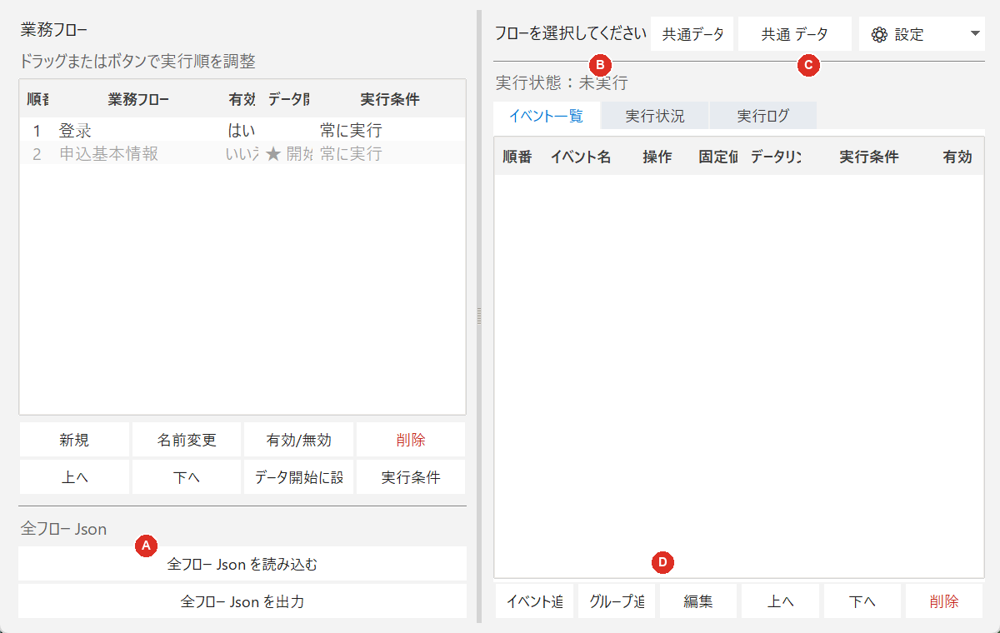

左側メニューを選択すると、同じウィンドウの右側でフロー設計、データ、ログイン状態、実行管理を切り替えられます。

| ボタン | 操作内容 | 確認事項 |
|---|---|---|
| 新規 | 新しい業務フローを作成します。 | 分かりやすい名前を入力します。 |
| 名前変更 | 選択中のフロー名を変更します。 | 対象行を先に選択します。 |
| 有効/無効 | 実行対象と実行対象外を切り替えます。 | 無効のフローは順番実行でスキップされます。 |
| 削除 | フローと配下の全イベントを削除します。 | 確認画面のフロー名を確認します。 |
| 上へ／下へ | フローの実行順を変更します。 | ドラッグでも並べ替えられます。 |
| データ開始に設定 | このフローから共通データごとの処理を開始します。 | 開始位置より前ではデータリンクを使用できません。 |
| 実行条件 | データ値による実行条件を設定します。 | 共通データ構造を先に作成します。 |
| 全フロー Json を読み込む | 保存済みの全フローで現在内容を置き換えます。 | 必要なら先に出力します。 |
| 全フロー Json を出力 | 全フローとイベントをバックアップします。 | 保存先を確認します。 |
| 項目 | 操作内容 | 確認事項 |
|---|---|---|
| イベント追加 | 選択中のフローへイベントを追加します。 | 追加先のフロー名を先に確認します。 |
| グループ追加 | 繰り返し・再試行に使うイベントグループを追加します。 | 挿入位置のイベントを先に選択します。 |
| 編集 | 選択中のイベントまたはグループを編集します。 | 保存後、一覧の内容を確認します。 |
| 上へ／下へ | イベントの実行順を変更します。 | グループ境界を越える移動に注意します。 |
| 削除 | 選択中のイベントまたはグループを削除します。 | 確認画面の対象名を確認します。 |